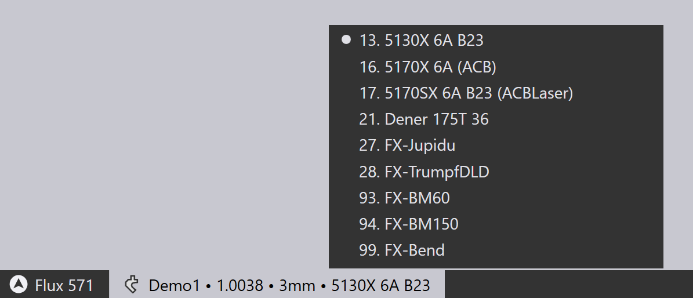

创建折弯数据


更多操作
以下是零件为折弯装备完毕后可以执行的一些操作的简要总结。
-
如果单击Spacebar，将开始折弯模拟。您也可以使用折弯导航器上的模拟控件来启动、停止或后退模拟：

-
如果有任何警告或错误，它们会显示在折弯导航器中，您可以通过单击相应的单元查看和解决这些问题：

-
您可以编辑折弯加工 （上模和下模）、止挡设置或角度测量设置，只需在模拟视图中直接单击该对象：

-
您可以通过单击零件下方选项卡中的机床名称来更改机床，并选择其他机床：
 -
单击左侧的工具栏上面的 设置
 图标可编辑其他设置用于每个折弯（或编辑此折弯机使用的默认设置，或用于整个TecZone Bend应用程序）。
图标可编辑其他设置用于每个折弯（或编辑此折弯机使用的默认设置，或用于整个TecZone Bend应用程序）。 -
单击左侧工具栏上面的 显示
 图标可编辑机床的视图——您可以打开或关闭其他组件（如下模导轨、折弯滑块、后挡料支架系统）的显示。您还可以将各种组件变为_半透明_。
图标可编辑机床的视图——您可以打开或关闭其他组件（如下模导轨、折弯滑块、后挡料支架系统）的显示。您还可以将各种组件变为_半透明_。
当创建的折弯程序没有任何错误时，将自动生成零件数控程序和折弯_设置表_。 您可以使用Bend Outputs 设置页面来设置零件数控程序和设置表是否自动生成，并配置这些输出的目标地点，以及报告的格式。 如果已生成代码，左侧工具栏中的数控代码按钮将变灰：

当您对零件进行任何更改时，此按钮将再次_启用_，您可以通过再次单击此图标（或按C键）重新生成数控程序。